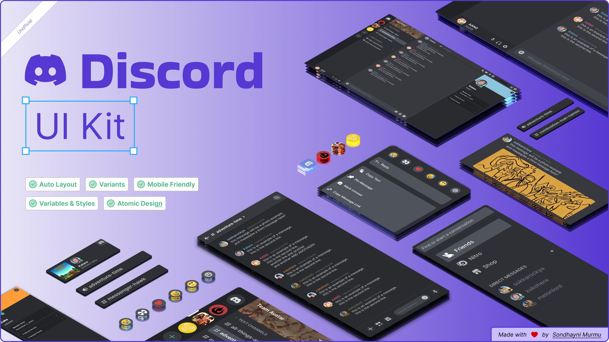
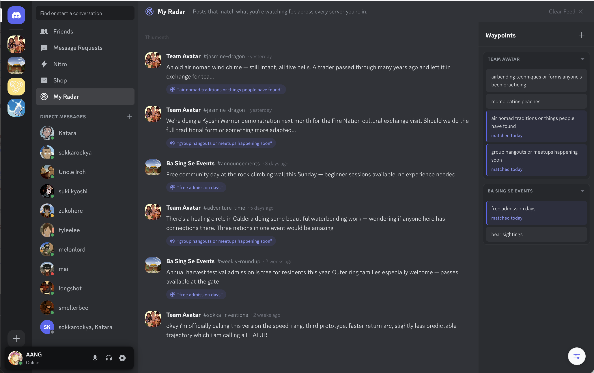
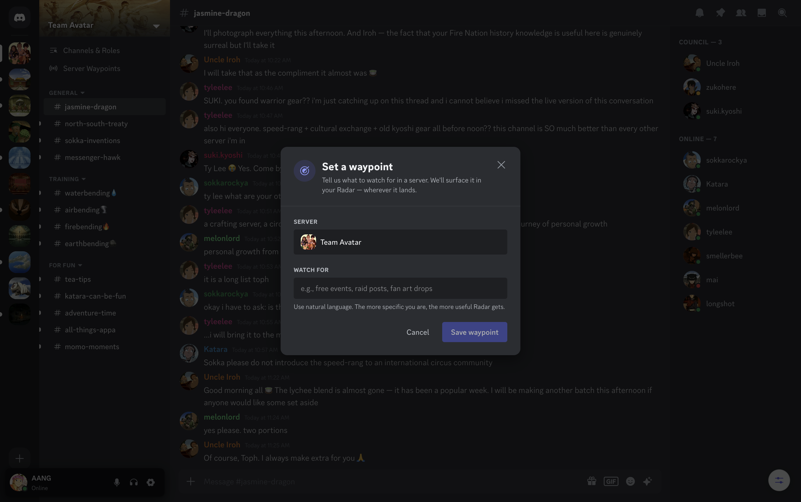
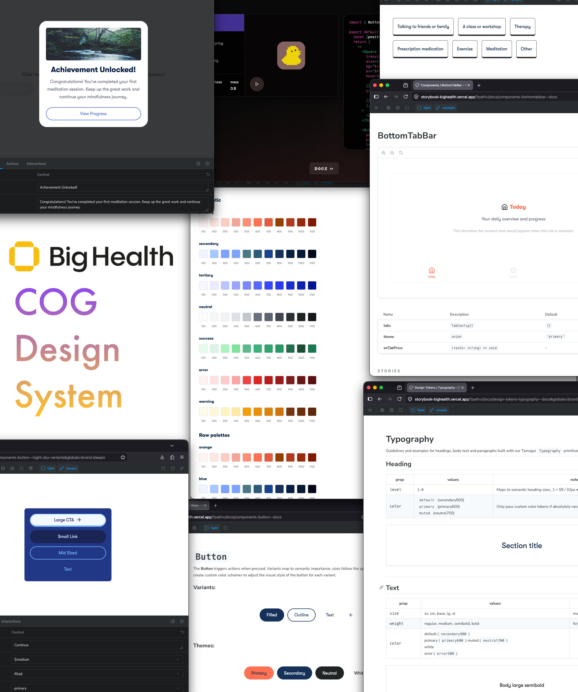
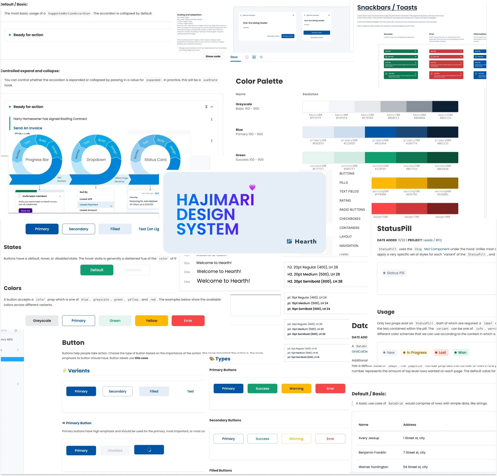
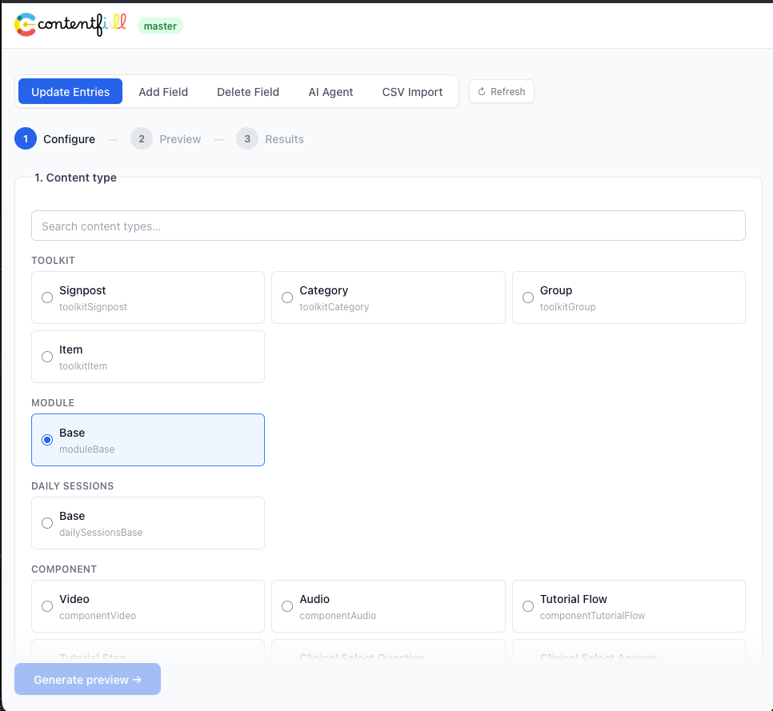
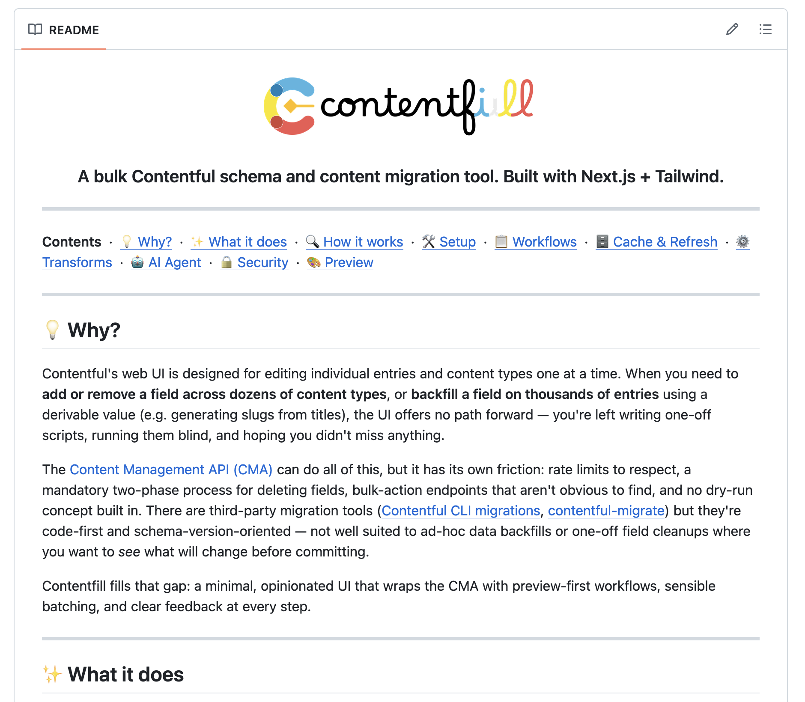

Pegboard — Initial Viewport Simulation (1440 × 900 @ 50% scale)
A — Current
Discord hero · DS clipped left · Contentfill right edge · By Request off-screen
hi! sondhayni here 👋🏽
— an inquisitive maker pulling at the seam between design and engineering.

UI kit →

case study →

prototype →
project: discord "waypoints"
building design systems

storybook →

case study →

github →

case study →
project: contentfill
by request 🔒
⚠ Design Systems: washi 40px off left, stack 20px off left
⚠ By Request stack: off-screen (y=910, fold=900)
⚠ Contentfill: right edge — only left half visible
B — Proposed
DS +80x · Contentfill −120x · By Request −120y · Discord unchanged
hi! sondhayni here 👋🏽
— an inquisitive maker pulling at the seam between design and engineering.
UI kit →
case study →
prototype →
project: discord "waypoints"
building design systems
storybook →
case study →
github →
case study →
project: contentfill
by request 🔒
by request →
✓ All 4 project clusters visible on first render
✓ Discord (3 polaroids) remains central hero
✓ By Request 🔒 stack now peeks into frame at bottom-right
Discord / Waypoints
Design Systems
Contentfill
By Request (locked)
viewport overflow faded to indicate more board beyond edges